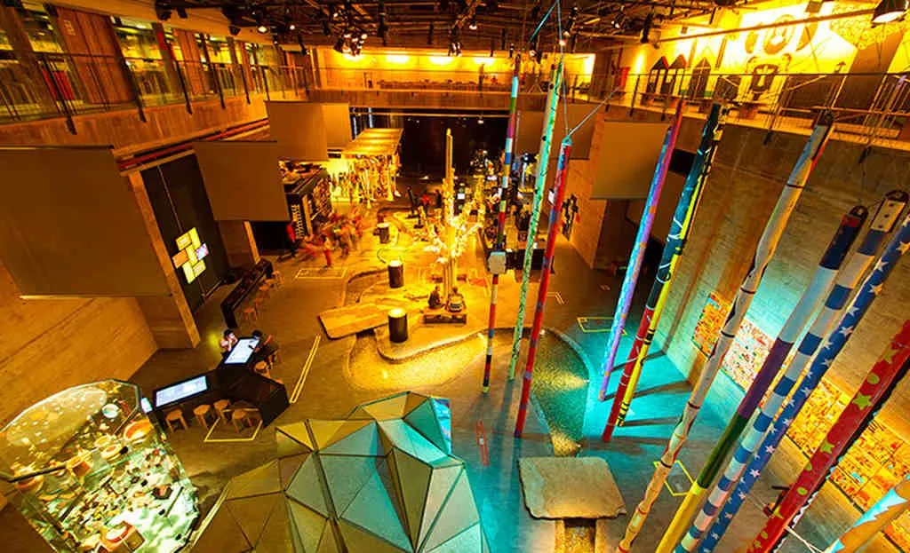
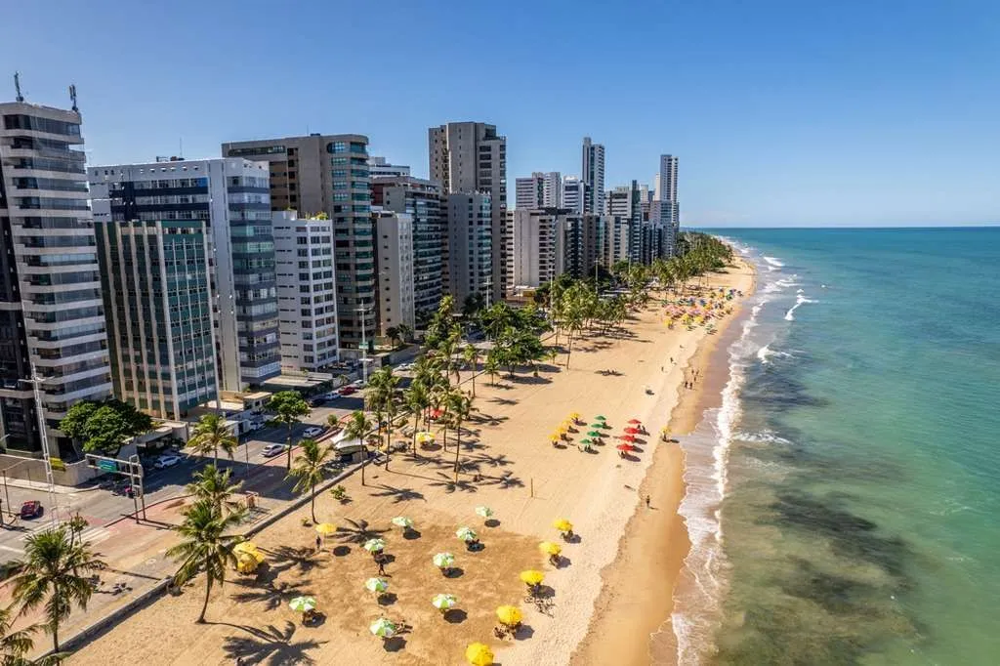

Recife
Conheça os pontos turisticos dessa cidade maravilhosa
Nós te ajudamos a encontrar os melhores pontos turisticos com os melhores preços Aonde está querendo viajar?
Museu Cais do Sertão
O Museu Cais do Sertão é um museu interativo sobre o Sertão e Luiz Gonzaga localizado na cidade do Recife, capital de Pernambuco, Brasil. Foi eleito um dos vinte melhores museus da América do Sul em 2015 pelos usuários do site de viagens TripAdvisor.
Praia de Boa Viagem
Com aproximadamente 8 km de extensão, ela é conhecida por suas águas calmas e cristalinas, ideais para nadar, tomar sol e praticar esportes aquáticos. A praia também é cercada por uma orla com ciclovia, pista de corrida, bares, restaurantes e lojas.